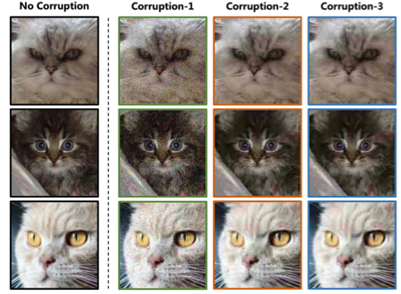
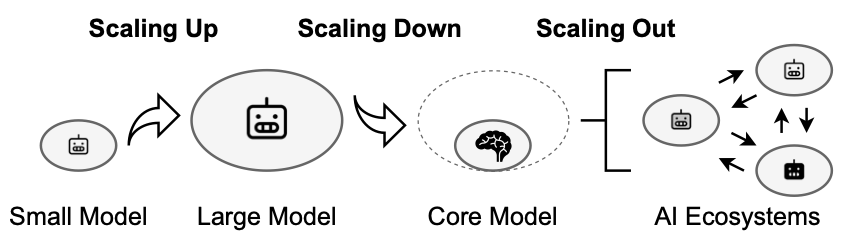
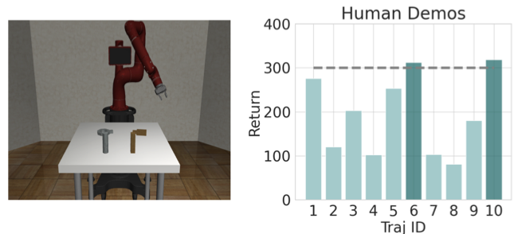
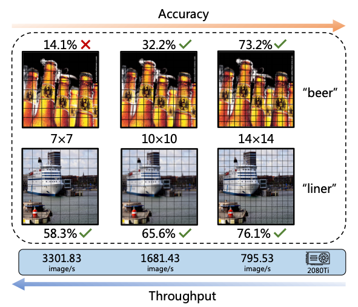
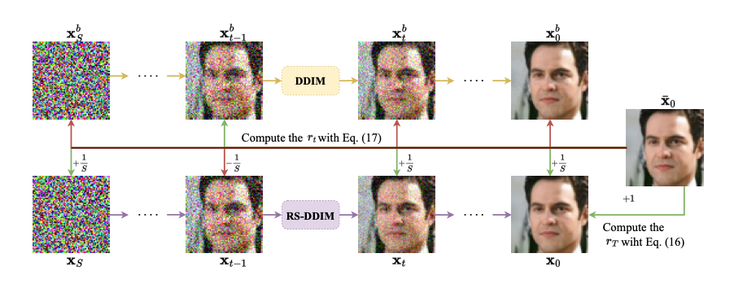
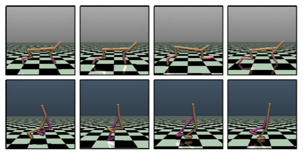
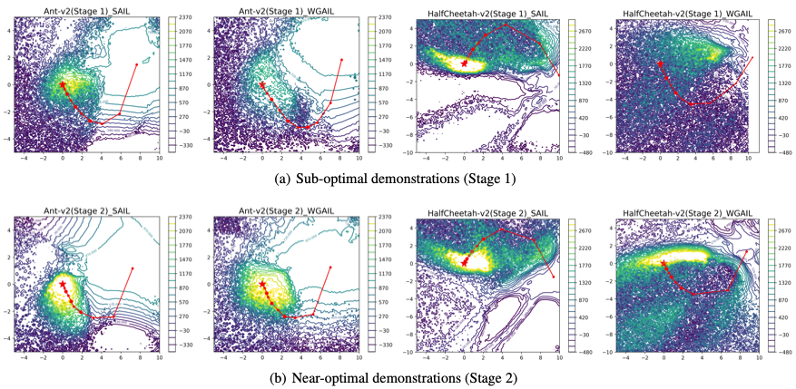
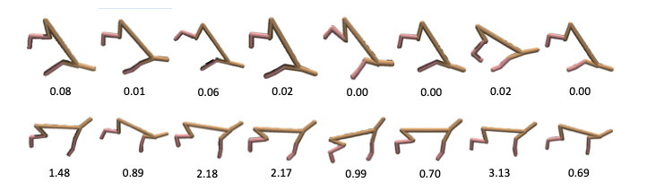
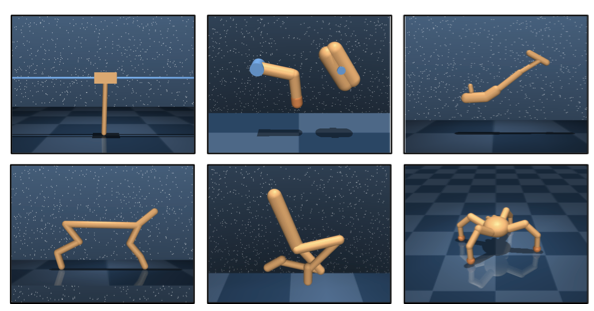

Yunke Wang
Postdoctoral Research Associate,
School of Computer Science,
The University of Sydney (USYD)
Pillar Co-Lead,
Net Zero Institute (NZI),
The University of Sydney (USYD)
Email Google Scholar GitHub LinkedIn DBLP University Page CV
I am a Postdoctoral Research Associate at the University of Sydney, working with Prof. Chang Xu. My research spans Embodied AI, Generative Models, and Reinforcement Learning. I work on vision-language-action (VLA) models, world-action models, and whole-body control for embodied agents; image & video generation, editing, and efficient inference; and imitation learning from imperfect demonstrations with adversarial training. I received my Ph.D. from Wuhan University (2024) advised by Prof. Bo Du.
Robotics
• Vision-language-action (VLA) model
• Reinforcement learning / Imitation learning
• Whole-body control
Generative Models
• Image & video generation
• Image editing
• Efficiency
Vision-Language Models (VLMs)
• Efficiency
• Reasoning
• Memory
News
- (2026.05) I will serve as the Web Chair of ACM MM 2027 [CORE A*].
- (2026.05) I received Gold Reviewer Award at ICML 2026.
- (2026.05) We received an ARC Linkage Project (LP) grant on "Enabling VLA Assistive Robotics for the Future of Aged Care in Australia"!
- (2026.05) I will serve as the Area Chair of NeurIPS 2026.
- (2026.05) I will serve as the Local Arrangement Chair of DICTA 2026 [Australia's premier conference on computer vision].
- (2026.05) 1 paper is accepted by TIP 2026 (IF 10.8).
- (2026.05) 4 papers are accepted by ICML 2026.
- (2026.04) 1 paper is accepted by ACL 2026.
- (2026.03) I received EMCRs Training Scheme Award as the Lead Applicant, The University of Sydney.
- (2026.02) 3 papers (1 Highlight) are accepted by CVPR 2026.
- (2026.01) We received an AEA (Australia's Economic Accelerator) Ignite grant on "Last-link Automation in Daily Retail Operations"!
- (2026.01) 1 paper is accepted by ICLR 2026.
- (2025.11) 1 paper is accepted by AAAI 2026.
- (2025.09) 1 paper is accepted by NeurIPS 2025.
- (2025.05) 1 paper is accepted by TPAMI 2025 (IF 20.4).
- (2025.05) 1 paper is accepted by ICML 2025.
- (2025.05) 1 paper is accepted by KDD 2025.
- (2025.05) Successfully organized the Workshop on Sustainable AI for the Future Web at The Web Conference 2025 [CORE A*], Sydney, Australia.
First-Author Publications
-

TPAMI 2025[1] On Positive-Unlabeled Classification from Corrupted Data in GANsIEEE Transactions on Pattern Analysis and Machine Intelligence (TPAMI), 2025. -

ICML 2025 -

ICML 2024 -

NN 2024[4] Multi-Tailed Vision Transformer for Efficient InferenceNeural Networks, 2024. -

KDD 2023[5] Learning to Schedule in Diffusion Probabilistic ModelsACM SIGKDD Conference on Knowledge Discovery and Data Mining (KDD), 2023. -

AAAI 2023 -

IJCAI 2021 -

ICML 2021[8] Learning to Weight Imperfect DemonstrationsInternational Conference on Machine Learning (ICML), 2021. -

Preprint
Services
- Co-Lead of Green Computing Pillar, Net Zero Institute, The University of Sydney
- Web Chair, ACM MM [CORE A*], 2027
- Local Arrangement Chair, DICTA [Premier Conference on Computer Vision in Australia], 2026
- AI Coding for Research Productivity: An EMCR Training Workshop, The University of Sydney, 2026
- Workshop on Sustainable AI for the Future Web, The Web Conference [CORE A* / CCF A], 2025
- NeurIPS
- NeurIPS, ICML, ICLR, CVPR, ICCV, ECCV, KDD, ACM MM, AAAI, IJCAI, CoRL, ICRA, IROS, ICPR
- TPAMI, Artificial Intelligence, TIP, TMM, TKDE, TCSVT, RA-L, Neural Networks, Neurocomputing, PR-L
Contact
Email: yunke.wang at sydney.edu.au
Office: J17, The University of Sydney, Sydney NSW 2006, Australia